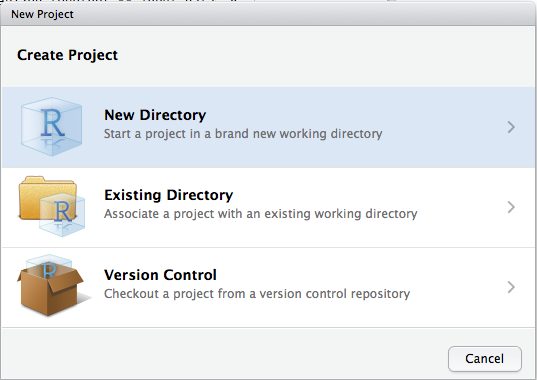
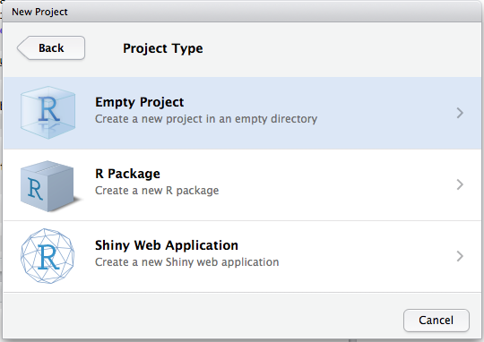

8 Flujo de trabajo: proyectos
Llegará el día en que tendrás que salir de R, ir a hacer otra cosa y después volver a tu análisis al día siguiente. Llegará el día en que estés trabajando simultáneamente en múltiples análisis en R y quieras mantenerlos separados. Llegará el día en que tendrás que importar datos del mundo exterior a R y exportar resultados numéricos y gráficos creados en R hacia el exterior. Para manejar estas situaciones de la vida real, tienes que tomar dos decisiones:
¿Qué parte de tu análisis es “real”? Es decir, ¿qué vas a guardar como registro permanente de lo sucedido durante el análisis?
¿Dónde “vive” tu análisis?
8.1 ¿Qué es real?
Si estás recién empezando a utilizar R, está bien que consideres “real” tu ambiente (esto es, los objetos listados en el panel Environment). Sin embargo, a largo plazo tendrás una mejor experiencia usando R si consideras que tus scripts son lo “real”.
Con tus scripts de R (y tus archivos con datos) puedes volver a crear el ambiente. ¡Es mucho más difícil volver a crear tus scripts a partir de tu ambiente! Para hacerlo, tendrías que reescribir muchas líneas de código de memoria (cometiendo errores durante el proceso), o analizar con muchísima atención tu historial en R.
Para promover este comportamiento, te recomiendo que configures RStudio para que no guarde tu espacio de trabajo (workspace) entre sesiones:

Esto te va a hacer sufrir a corto plazo, pues cuando reinicies RStudio este no recordará los resultados del código que ejecutaste la última vez. Pero este sufrimiento momentáneo te va a salvar de una agonía a largo plazo, ya que te obligará a capturar en tu código todas las interacciones importantes. No hay nada peor que descubrir tres meses más tarde que sólo guardaste los resultados de un cálculo importante en tu espacio de trabajo y no el cálculo en sí en el código.
Hay un par de métodos abreviados de teclado (keyboard shortcuts) geniales que te ayudarán a asegurarte de que las partes importantes de tu código están capturadas en el editor:
- Presiona Cmd/Ctrl + Shift + F10 para reiniciar RStudio.
- Presiona Cmd/Ctrl + Shift + S para volver a ejecutar el script actual.
Nosotros usamos este patrón cientos de veces a la semana.
8.2 ¿Dónde vive tu análisis?
R posee el poderoso concepto de directorio de trabajo (working directory en inglés). Aquí es donde R busca los archivos que le pides que lea y donde colocará todos los archivos que le pidas que guarde. RStudio muestra tu directorio de trabajo actual en la parte superior de la consola:

Puedes imprimir esto en código de R ejecutando el comando getwd() (en inglés get working directory, que significa obtener directorio de trabajo):
Si estás recién empezando a utilizar R, está bien que tu directorio home (carpeta personal o de usuario), tu directorio de documentos o cualquier otro directorio en tu computadora sea el directorio de trabajo de R. Pero estás en el capítulo seis de este libro y ya no eres un/a principiante. Pronto deberías dar el siguiente paso y comenzar a organizar tus proyectos de análisis en directorios y, ya trabajando en un proyecto, definir que el directorio de trabajo de R sea el directorio asociado a dicho proyecto en particular.
__No lo recomendamos, pero también es posible definir el directorio de trabajo desde R:
Sin embargo, nunca deberías hacerlo de esta forma, pues existe una mejor manera, una que te lleva por la ruta para manejar tu trabajo en R como una persona experta.
8.3 Rutas y directorios
Las rutas (del inglés paths) y los directorios son un poco complicados porque existen dos estilos básicos de rutas: Mac/Linux y Windows. Las tres diferencias principales entre estos estilos son:
Cómo separas los componentes de la ruta. Mac y Linux usan barras (slash) (p. ej.
graficos/diamantes.pdf), mientras que Windows utiliza barras invertidas (backslash) (p. ej.,graficos\diamantes.pdf). R puede trabajar con ambos tipos (sin importar qué plataforma estés usando actualmente). Desafortunadamente, las barras invertidas tienen un significado especial en R y para poder escribir utilizarlas en la ruta de un archivo, ¡tendrás que teclear dos barras invertidas! Eso hace que la vida sea frustrante, así que recomendamos usar siempre el estilo Linux/Mac con las barras (/).Las rutas absolutas (es decir, las rutas que te llevan a la misma ubicación sin importar tu directorio de trabajo) lucen diferentes. En Windows dichas rutas comienzan con la letra del disco (p. ej.
C:) o dos barras invertidas (p. ej.\\nombredelservidor) y en Mac/Linux comienzan con una barra “/” (p. ej./users/hadley). Nunca deberías usar rutas absolutas en tus scripts, ya que afectan negativamente el proceso de compartir archivos: nadie más va a tener exactamente la misma configuración de directorios que tú.La última diferencia es la ubicación a la que
~se refiere.~es un conveniente acceso directo a tu directorio personal. Windows no cuenta realmente con la noción de un directorio personal, así que se refiere a tu directorio de documentos.
8.4 Proyectos en RStudio
Las personas expertas en R mantienen todos los archivos asociados a un proyecto en un mismo lugar — datos de entrada, scripts, resultados, gráficos. Esta es una práctica tan acertada y común, que RStudio cuenta con soporte integrado para esto por medio de los proyectos.
Hagamos un proyecto para que puedas usarlo mientras trabajas con el resto de este libro. Haz clic en File > New Proyect, y después:

Escribe r4ds como nombre de tu proyecto y piensa en qué subdirectorio quieres guardar el proyecto. Si no lo guardas en una ubicación razonable ¡será difícil encontrarlo en el futuro!
Una vez que hayas terminado con este proceso, tendrás un nuevo proyecto en RStudio para este libro. Verifica que el directorio “personal” de tu proyecto sea el actual directorio de trabajo:
Siempre que hagas referencia a un archivo con una ruta relativa, RStudio lo buscará en este directorio.
Ahora teclea los siguientes comandos en el editor de scripts y luego guarda el archivo como “diamantes.R”. A continuación, ejecuta el script completo; esto guardará un archivo PDF y un archivo CSV en el directorio de tu proyecto. No te preocupes por los detalles, aprenderás acerca de ellos más adelante en este libro.
library(tidyverse)
library(datos)
ggplot(diamantes, aes(quilate, precio)) +
geom_hex()
ggsave("diamantes.pdf")
write_csv(diamantes, "diamantes.csv")Cierra RStudio. Inspecciona la carpeta asociada a tu proyecto — encontrarás que hay un archivo .Rproj allí. Haz doble clic en ese archivo para reabrir el proyecto. Nota que al hacer esto, vuelves al punto donde estabas justo antes de cerrar RStudio: es el mismo directorio de trabajo e historial de comandos, y todos los archivos con los que estabas trabajando siguen abiertos. Sin embargo, dado que seguiste las instrucciones que te dimos anteriormente, tendrás un ambiente (Environment) completamente limpio, lo que te asegura que estás empezando desde cero.
Según tu sistema operativo y de la manera que prefieras, busca en tu computadora el archivo diamantes.pdf. Encontrarás el archivo PDF (lo que no es precisamente una sorpresa), pero también el script que lo creó (diamantes.R). ¡Esta es una ventaja increíble! Un día vas a querer crear un gráfico o simplemente entender de dónde vino. Si siempre guardas gráficos por medio de comandos en código y nunca con el ratón o el portapapeles, ¡serás capaz de reproducir fácilmente trabajo pasado!
8.5 Resumen
En resumen, los proyectos en RStudio te ofrecen la oportunidad de mantener un flujo de trabajo consistente que te será de mucha utilidad en el futuro:
Crea un proyecto RStudio para cada proyecto de análisis de datos.
Mantén los archivos ahí; ya hablaremos de cómo leerlos en R en el capítulo sobre importación de datos.
Conserva los scripts ahí también; edítalos, ejecutálos por partes o en su totalidad.
Guarda todos los resultados de tu trabajo (gráficos y sets de datos limpios) ahí.
Siempre usa rutas relativas, nunca rutas absolutas.
Todo lo que necesites siempre estará concentrado en una sola ubicación y claramente separado de los otros proyectos en los que estés trabajando.